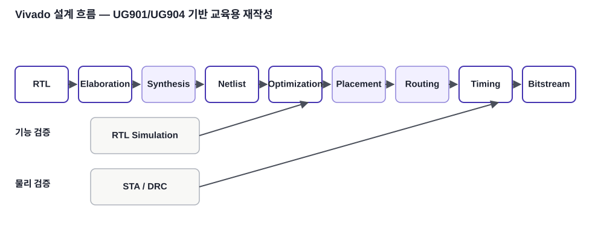
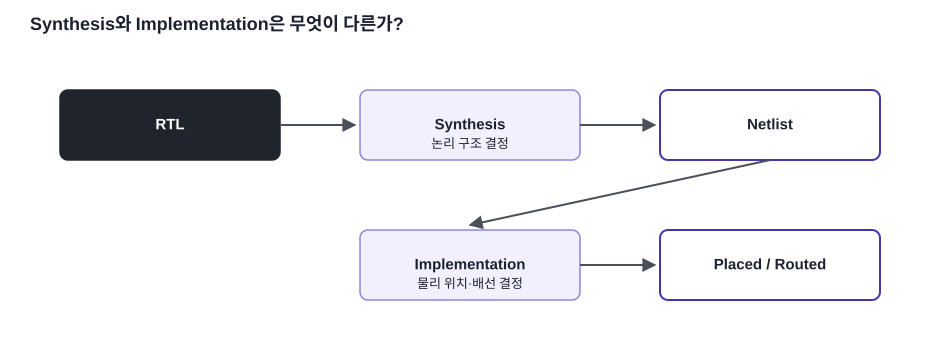

출발점
Verilog RTL은 아직 실제 FPGA 배치 결과가 아닙니다.
FPGA / SoC 개념 · 03
RTL 작성부터 Elaboration, Synthesis, Placement, Routing, Timing Analysis, Bitstream까지 Vivado 전체 구현 흐름을 연결합니다.
Verilog RTL은 아직 실제 FPGA 배치 결과가 아닙니다.
합성 후 Netlist를 실제 소자 자원에 배치·배선합니다.
Simulation 성공과 Timing 만족은 서로 다른 검증입니다.

Elaboration은 Module 계층, Parameter, Port 연결을 해석하여 설계 구조를 펼치는 과정입니다. Synthesis(합성)는 RTL 문장에서 Register, MUX, Adder, Comparator, FSM 등을 추론하고 Target Device의 논리 자원에 맞게 논리 Netlist를 만드는 과정입니다.

UG904는 Vivado Implementation이 합성된 Netlist를 Device Resource에 배치하고 배선하여 논리·물리·Timing Constraint를 만족시키는 과정이라고 설명합니다. 일반적으로 opt_design → place_design → route_design 순서로 진행됩니다.
| 단계 | 성공의 의미 | 아직 보장하지 않는 것 |
|---|---|---|
| RTL Simulation | 논리 기능 | 실제 배선 지연 |
| Synthesis | 합성 가능한 회로 생성 | 배치·배선 후 Timing |
| Implementation | 실제 Device에 배치·배선 | Constraint 자체의 적절성 |
| Board Test | 실제 I/O 동작 | 모든 Corner 조건 |
본문의 기술 내용과 교육용 재작성 그림은 아래 공식 문서를 기준으로 검증했습니다. 원문 전체를 복제하지 않고 핵심 구조를 학습용으로 재구성했습니다.